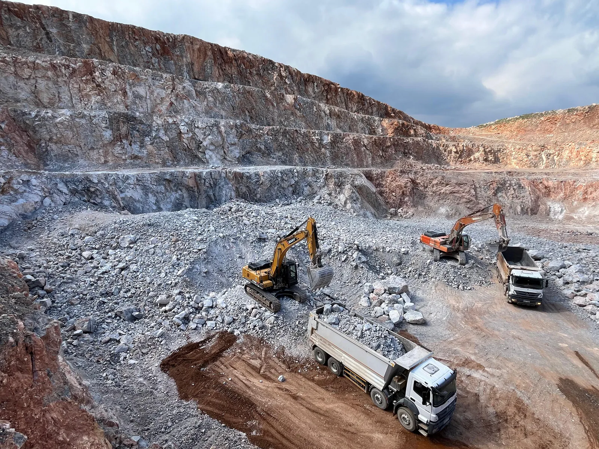
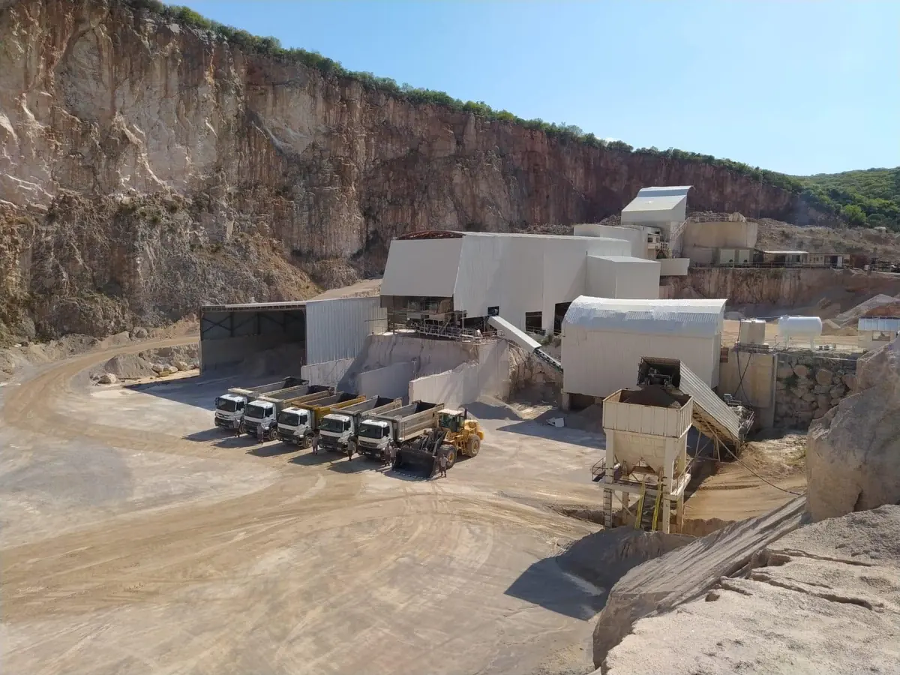
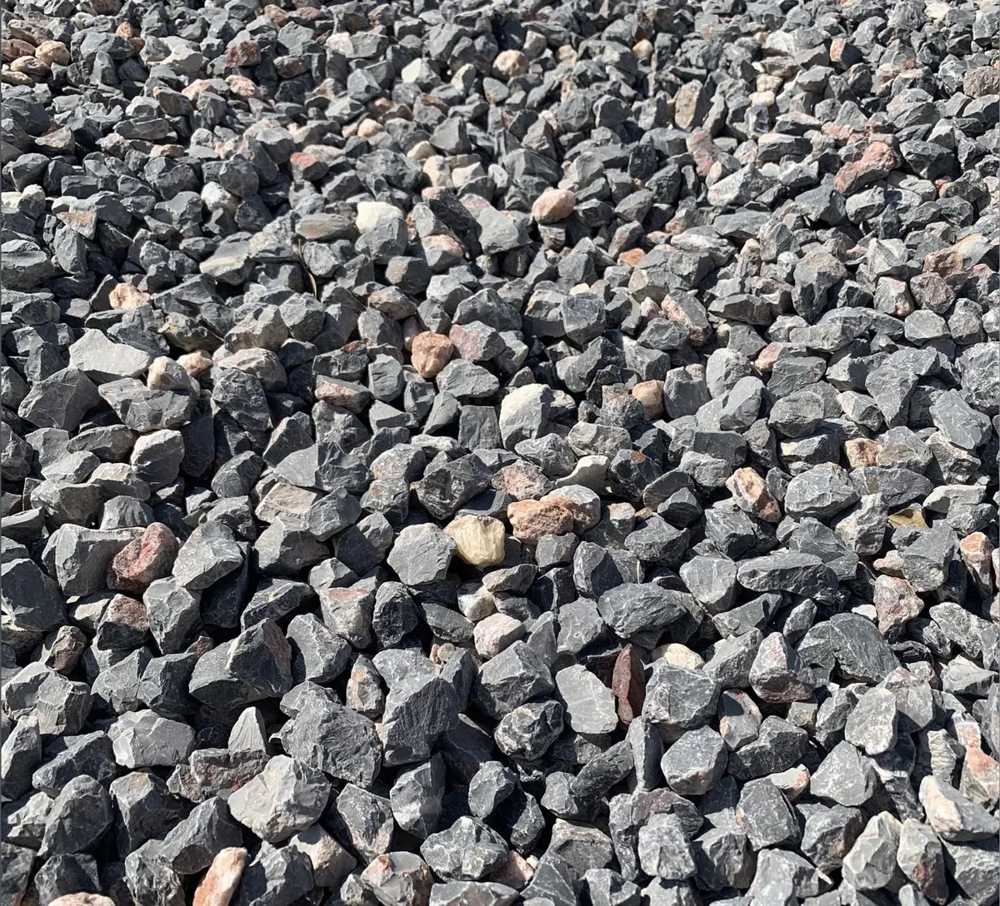
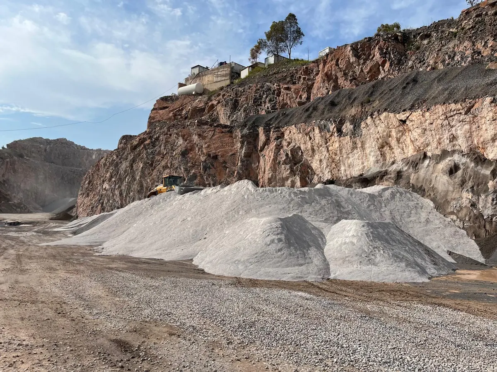

1960Established
2Active Quarry Sites
2.1MTons Annual Capacity
Export ReadyLogistics & Port Access
Production Network
Bornova and Urla Quarry Operations
Two Active Production Sites provide continuous supply capacity and logistics access to both Alsancak Port and Aliağa port infrastructure.
- Bornova capacity
- 600 tons/hour
- Urla capacity
- 250 tons/hour
- Total annual capacity
- 2,121,600 tons/year


Product Range
Aggregate Products and Gradations
Custom gradations can be produced according to project requirements.
| Product | Size / Gradation |
|---|---|
| Stone Dust | 0-3 mm |
| Fine Aggregate | 0-5 mm |
| Crushed Stone | 5-12 mm |
| Crushed Stone | 12-22 mm |
| Fill Stone | 20-70 mm |
| Limestone | Available upon project request |
| Wall Stone | Available upon project request |
| Riprap Stone | Available upon project request |
Ports & Logistics
Strategic Access to İzmir Export Ports
The Bornova facility is located at Inonu Mahallesi 9501 Sokak No:22, 35040 Bornova, İzmir, Turkey. Transportation from both Bornova and Urla facilities to Alsancak Port and Aliağa port infrastructure is available for international shipment planning.
- Road access to Alsancak Port
- Road access to Aliağa port infrastructure
- Bulk supply and project-based logistics planning
- Export-capable aggregate, crushed stone and riprap stone production

Request Export Supply Information
Contact Bemaş for aggregate specifications, available gradations, production capacity and logistics planning from İzmir, Turkey.
info@bemasmining.com